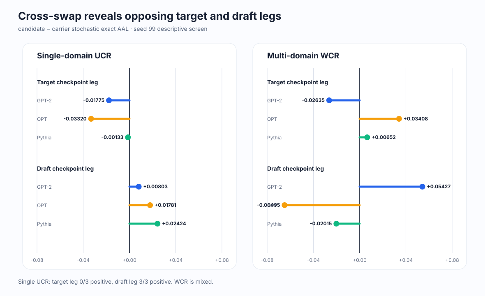
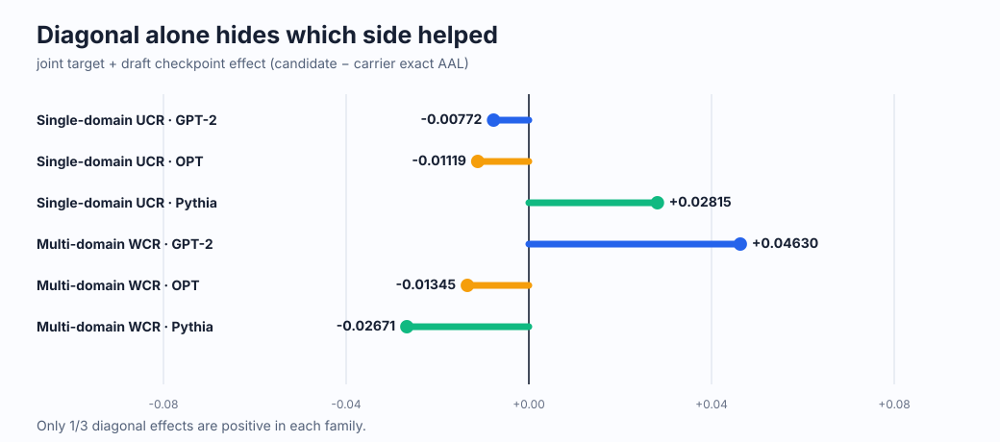

Retrospective exact screen → prospective method
Diagonal은
누가 도왔는지
말해주지 않는다
두 independent pretrained AR 모델을 따로 학습한 뒤 checkpoint를 교차했다. Single-domain UCR에서는 target response leg가 3/3 pair에서 음수, 같은 조건의 draft adaptation leg는 3/3 양수였다. Joint endpoint 하나만 보면 이 반대 방향이 가려질 수 있다.
Authoritative setting
공유 head가 아니라, 완전히 분리된 두 AR 모델
MEDUSA·EAGLE 계열은 이 결과의 범위 밖이다. 두 모델은 tokenizer-compatible token ID만 공유하고 학습 state와 representation은 공유하지 않는다.
자체 embedding · backbone · hidden state · LM head · LoRA · AdamW
자체 embedding · backbone · hidden state · LM head · LoRA · AdamW
Why cross-swap
한쪽 checkpoint만 바꿔서 부호를 분리한다
C는 carrier, S는
single-domain UCR response trajectory다. 아래 leg는 고정된 상대 checkpoint에
조건부인 exact-AAL 차이이며, diagonal total effect의 인과 mediation 분해가 아니다.
carrier target + carrier draft
draft를 고정하고 target만 교체
target을 고정하고 draft만 교체
target과 draft를 동시에 교체
Single UCR target leg
GPT-2 −0.01775 · OPT −0.03320 · Pythia −0.00133
Single UCR draft leg
GPT-2 +0.00803 · OPT +0.01781 · Pythia +0.02424

Exact numerical readout
Diagonal만 보면 상쇄를 놓친다
Prompt 안에서 stochastic sampling seed 두 개를 먼저 평균한 뒤 24개 domain–prompt cluster를 동일 가중했다. 값은 candidate−carrier exact AAL delta다.
| Pair | Single target SC−CC |
Single draft CS−CC |
Single diagonal SS−CC |
WCR target WC−CC |
WCR draft CW−CC |
WCR diagonal WW−CC |
|---|---|---|---|---|---|---|
| GPT-2 ← DistilGPT-2 | −0.01775 | +0.00803 | −0.00772 | −0.02635 | +0.05427 | +0.04630 |
| OPT-350M ← OPT-125M | −0.03320 | +0.01781 | −0.01119 | +0.03408 | −0.06495 | −0.01345 |
| Pythia-410M ← Pythia-70M | −0.00133 | +0.02424 | +0.02815 | +0.00652 | −0.02015 | −0.02671 |
| 양수 pair 수 | 0/3 | 3/3 | 1/3 | 2/3 | 1/3 | 1/3 |

상대 checkpoint를 treatment로 바꾼 leg와 interaction 보기
| Pair | Single target SS−CS |
Single draft SS−SC |
Single interaction |
WCR target WW−CW |
WCR draft WW−WC |
WCR interaction |
|---|---|---|---|---|---|---|
| GPT-2 ← DistilGPT-2 | −0.01575 | +0.01003 | +0.00200 | −0.00797 | +0.07264 | +0.01838 |
| OPT-350M ← OPT-125M | −0.02899 | +0.02201 | +0.00421 | +0.05149 | −0.04753 | +0.01742 |
| Pythia-410M ← Pythia-70M | +0.00391 | +0.02948 | +0.00523 | −0.00656 | −0.03323 | −0.01308 |
Single UCR draft leg는 treatment target 조건에서도 3/3 양수다. Interaction도 single UCR에서 3/3 양수이므로 각 leg를 단순히 더해 diagonal을 인과 분해하면 안 된다.
Prospective CT-EPR v0.12
Draft 이득은 유지하고, target response만 조건부로 받는다
Cumulative-Twin Exact-Pareto Response의 핵심은 gradient 모양 하나를 다시 설계하는 것이 아니다. live-H1 draft update는 항상 commit하고, drafter-aware target response는 cumulative CE-only target twin 및 같은 updated draft를 둔 actual exact target leg를 모두 통과할 때만 적용한다.
CE twin 진행
독립 cumulative target twin을 native CE-only parameter·Adam·scheduler로 업데이트
Draft H1 commit
K=3 pathwise Hybrid LK draft/full-Adam update를 target 결과와 무관하게 원자적으로 유지
Target response
Updated draft에 aware한 UCR/WCR response 후보를 target Adam 밖에서 생성
Cumulative guard
CE twin 대비 PPL·forward-KL·domain ceiling과 strict post-cast radius 확인
Exact target leg
동일 updated draft 아래 FP32 eager micro-AAL candidate−twin 효과로 선택
이것은 현재의 방법 가설이지, 성공 결과가 아니다.
Retrospective cross-swap은 CT-EPR의 구성요소를 선택할 경험적 근거를 제공한다. 그러나 CT-EPR 자체의 target non-inferiority, applied exact AAL, endpoint Pareto 또는 architecture generality는 아직 입증되지 않았다.
Gate status · 2026-07-18 UTC
현재 열린 것은 메커니즘뿐이다
독립 재감사는 utility-blind primitive에 대해서만
go_stage0_mechanism을 냈다. 이 판정은 실제 Stage 0 결과나
seed-99 applied efficacy를 대신하지 않는다.
1,512 FP32 exact rows · greedy identity complete · cross-swap 분석 완료
Focused tests 122 pass · adversarial replay 23/23 · utility unopened
3 pair × one step · forced response off · exact utility callback 0회
Stage-0 receipt와 external executable freeze 전에는 seed-99 utility 금지
다음 falsifiable gate: Stage 0에서 draft H1 full-state commit이 살아남고, 모든 target response가 구조적으로 부적격이며, live target이 cumulative twin으로 exact rollback되고, utility callback이 정확히 0회여야 한다.
Interpretation firewall
지금 말할 수 있는 것과 없는 것
- 말할 수 있음: single UCR의 exact target leg는 seed-99 세 pair에서 음수였고 draft leg는 양수였다.
- 말할 수 없음: target-side response는 모든 loss·architecture·seed에서 항상 해롭다.
- 말할 수 있음: diagonal endpoint는 반대 방향 leg를 가릴 수 있어 target-only conditional check가 필요하다.
- 말할 수 없음: cross-swap leg가 diagonal joint-training effect의 고유한 causal mediation decomposition이다.
- 말할 수 있음: CT-EPR의 설계 선택은 completed exact screen과 일관된다.
- 말할 수 없음: CT-EPR이 target 품질과 speculative utility를 이미 동시에 개선했다.
- 주의: training seed만 inferential unit이다. prompt·domain·sampling seed·token·decoding round는 replicate가 아니다.
- 주의: v0.11의
kill_v0_11_target_noninferiority는 이 retrospective screen으로 구제되지 않는다.
이 결과는 100-step LoRA engineering trajectory의
conditional checkpoint evidence다. Scratch pretraining, full fine-tuning,
production serving throughput 또는 foundation-model 전반으로 외삽하지 않는다.
Selection seeds 6–8은 계속 봉인되어 있다.